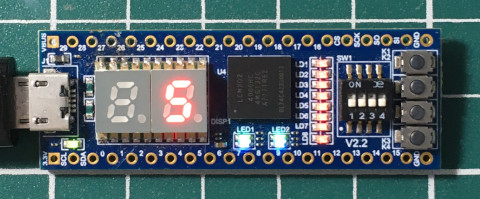

腳位

P.S. 七段顯示器的輸出腳位記得上拉電阻
完成
參考資訊：
https://www.stepfpga.com/doc/step-mxo2%E5%85%A5%E9%97%A8%E6%95%99%E7%A8%8B
main.vhd
library ieee;
use ieee.std_logic_1164.all;
entity main is
port(
clk: in bit;
seg_out: out bit_vector(8 downto 0));
end main;
architecture logic of main is
signal seg_cnt:integer:=0;
signal clk_cnt:integer:=0;
type seg_type is array (0 to 9) of bit_vector(8 downto 0);
constant seg_def:seg_type:=(
"000111111", "000000110", "001011011", "001001111", "001100110",
"001101101", "001111101", "000000111", "001111111", "001101111");
begin
process(clk) is
begin
if (clk'event and clk = '1') then
clk_cnt<= clk_cnt + 1;
end if;
if (clk_cnt >= 12000000) then
clk_cnt<= 0;
seg_out<= seg_def(seg_cnt);
seg_cnt<= seg_cnt + 1;
end if;
if (seg_cnt >= 10) then
seg_cnt<= 0;
end if;
end process;
end logic;
開發板上連接的是12MHz振盪器，因此，每數到12000000時，就更新七段顯示器的數值
腳位
P.S. 七段顯示器的輸出腳位記得上拉電阻
完成
